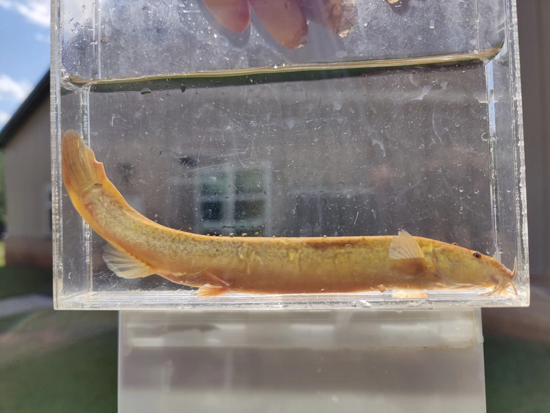

鱼类 · 动物界
泥鳅 Misgurnus anguillicaudatus

常见于稻田、沟渠和池塘的小型底栖鱼，体表黏滑、口周有须，能用肠管辅助呼吸，干旱时可以钻入泥中休眠。
- 分类
- 门脊索动物门纲硬骨鱼纲目鲤形目科鳅科属泥鳅属
- 栖息环境
- 稻田、沟渠、池塘和缓流河段的泥质底，喜有机质丰富的水体
- 地理分布
- 东亚地区，包括中国、日本和朝鲜半岛的淡水水域
- 保护级别
- 暂无评估；中国未列入国家重点保护野生动物名录
物种志
泥鳅体细长、呈圆柱形，后部侧扁，头小，口下位，口周有 5 对须。体表无鳞，黏液丰富，摸起来非常滑；体色灰褐或黄褐，体侧和背部布满黑色小斑点。成鱼体长一般 10–20 cm，最大约 30 cm，体重通常只有 20–50 g。
泥鳅分布于东亚的稻田、沟渠、池塘和缓流河段，喜欢泥质底和有机质丰富的水体。它是杂食性鱼类，吃水生昆虫、藻类、植物碎屑和腐殖质。泥鳅有两项特别的生存本领：一是能用肠管进行辅助呼吸，水中缺氧时会游到水面吞气，气体经肠道后由肛门排出；二是遇到干旱时能钻入泥中休眠，等雨水回来后重新钻出活动。繁殖期在 4–6 月，雌鱼把卵产在水草和泥底上，卵带黏性。泥鳅是常见的食用小鱼，也可入药，人工养殖较为普遍。目前它没有IUCN 的正式评估，中国未将其列入国家重点保护野生动物名录。
形态与习性
- 食性杂食性，吃水生昆虫、藻类、植物碎屑和腐殖质
- 体长一般 10–20 cm，最大约 30 cm
- 体重通常 20–50 g
- 呼吸可用肠管辅助呼吸，缺氧时浮到水面吞空气
- 繁殖4–6 月产卵，卵带黏性，黏附在水草和泥底上
- 习性干旱时钻入泥中休眠，雨水来临后重新活动
趣味知识
- 泥鳅能用肠管辅助呼吸，缺氧时会浮到水面吞空气。
- 干旱时它钻进泥里休眠，等雨水回来再钻出来。
- 泥鳅体表黏液丰富，抓在手里很容易滑走。